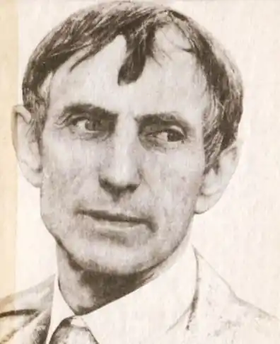
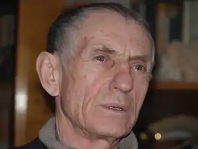

Дудар Євген Михайлович (24 січня 1933 року) – український майстер сучасної сатири, публіцист, артист розмовного жанру.
Народився в с. Озерна на Тернопільщині. Здобувши середню освіту, спробував вступити до театрального училища, однак зазнав поразки. Тоді хлопець вирішив йти служити до армії, та вже невдовзі був направлений до Азербайджану. Вже після повернення на рідну землю, Є. Дудар успішно складає іспити та стає студентом Львівського університету за спеціальністю "журналіст". Довгий час працює в редакції місцевих газет та видань, а після оселення в Києві отримує посаду редактора в сатиричному журналі "Перець".
Ще в роки студентства Є. Дудар пише перші гуморески, а в 1967 р. видає дебютну книгу "Прошу слова". Однак, автор майже був "зв’язаний по руках і ногах" суцільною жорсткою цензурою тих часів, обмежений темами для жартів. І лише у роки демократичних змін на теренах України зміг писати в повну силу, висміюючи можновладців та політиків. Друкує книги "Українці мої, українці... Сумні роздуми веселого чоловіка", "Плацдарм", "І силою, і правдою..." тощо. Блискуче самотужки виконує авторські твори зі сцени та на екранах телебачення. Євген Дудар (24. 01. 1933, с. Озерна, нині Зборівського району) — письменник-сатирик, виконавець II власних творів. Член НСПУ (1973). Заслужений діяч мистецтв України (1993). Лауреат літературної премії ім. Остапа Вишні (1985) та ім. М. Годованця (1997), міжнародної премія ім. П. Орлика (1995), премія ім. П. Сагайдачного (2000). Золота медаль Т. Шевченка (СВУ, Австралія, 1990). Співголова комітету гумору і сатири НСПУ. Закінчив факультет журналістики Львівського університету (1962). Працював у республіканських газетах, журналі "Перець". Від 1980 виконує власні твори на сцені (понад 10 тис. виступів, творчих вечорів, радіо— і телезустрічей). Співзасновник, художній керівник і голова журі Всеукраїнського фестивалю "Вишневі усмішки". Співзасновник Всесвітньої асоціації сатириків і гумористів у м. Габрово (Болгарія, 1985). Неодноразовий учасник Всесвітніх фестивалів сатири і гумор. Автор понад 20 книг, у т. ч. "Спогади про себе: Фрагменти з мого бурхливого і неспокійного життя" (2001). "І силою, і правдою..." (2003: обидві — Т.). Часто перебував на Тернопільщині, проводив творчі зустрічі з громадськістю краю.